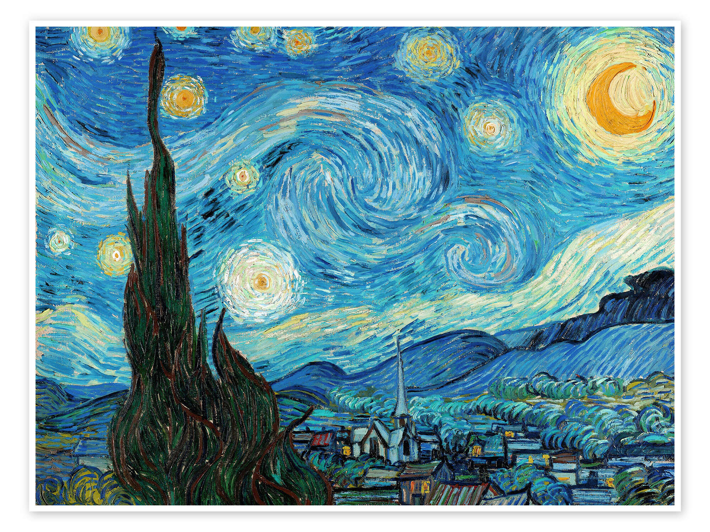
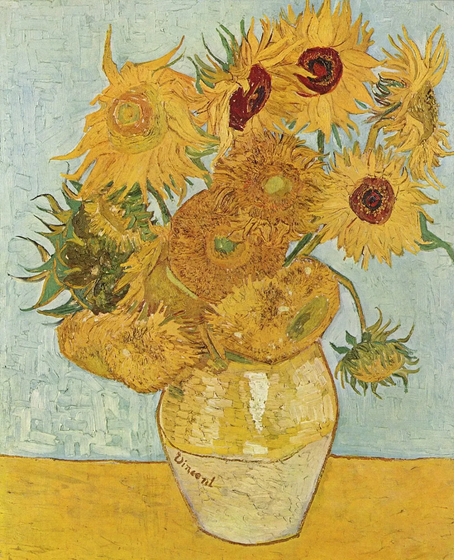

Van Gogh est un maître peintre du 19ème siècle. On le considère comme l'un des fondateurs de l'impressionnisme et il n'a été reconnu qu'à titre posthume. Son art est aujourd'hui inégalé et ses œuvres sont connues de tous.
Malgré cela, Van Gogh a été malheureux durant une grande partie de sa vie. Il était considéré comme fou et ne possédait aucune de ses peintures comme monnaie d'échange. À son époque, son nouveau genre n'était pas reconnu et était même moqué. Cela l'entraînera à son suicide en1890, ne se sentant pas à sa place.
Son chef-d'œuvre le plus connu, La nuit étoilée, était elle aussi considérée comme une "horreur" à l'époque. Van Gogh était en avance sur son temps mais n'a jamais été félicité de son vivant. Voilà pourquoi il est de notre devoir de nous instruire et de lui rendre hommage.
En somme, Van Gogh est un artiste incontournable de l'histoire de l'art. Sa vie et son œuvre continuent d'inspirer et de fasciner le grand public, et son influence sur l'art moderne est indéniable.


Une personnalité médiatisée
V. Van Gogh est aujourd'hui énormément médiatisé, que ce soit dans des séries, des films (par exemple, Doctor Who avec Matt Smith et Karen Gillan) ou même des publicités. Sa vie et son œuvre continuent d'inspirer de nombreux artistes et de fasciner le grand public.
L'un des films les plus célèbres sur Van Gogh est "La Vie passionnée de Vincent van Gogh" (1956), réalisé par Vincente Minnelli et interprété par Kirk Douglas dans le rôle principal. Le film retrace la vie de Van Gogh de ses débuts en tant qu'artiste à sa mort prématurée à l'âge de 37 ans. Il met en lumière ses relations difficiles avec sa famille, ses amis et ses amants, ainsi que sa lutte contre la maladie mentale.
Un autre film remarquable sur Van Gogh est "Loving Vincent" (2017), le premier long métrage entièrement peint à la main. Le film, réalisé par Dorota Kobiela et Hugh Welchman, explore les derniers jours de Van Gogh à travers une série d'interviews avec les personnes qui l'ont connu. Les acteurs ont été filmés en direct, puis chaque image a été peinte à la main dans le style de Van Gogh, créant ainsi une œuvre d'art visuellement époustouflante.
Du côté des séries télévisées, "Van Gogh: Painted with Words" (2010) est une production britannique qui met en vedette Benedict Cumberbatch dans le rôle de Van Gogh. La série se concentre sur les lettres que Van Gogh a écrites à son frère Théo, qui ont été une source précieuse d'informations sur la vie et les pensées de l'artiste.
Dans l'ensemble, les films et les séries sur Van Gogh offrent un aperçu fascinant de la vie et de l'œuvre de l'un des artistes les plus remarquables de l'histoire. Ils nous rappellent que derrière chaque chef-d'œuvre se cache une histoire humaine complexe et émouvante.